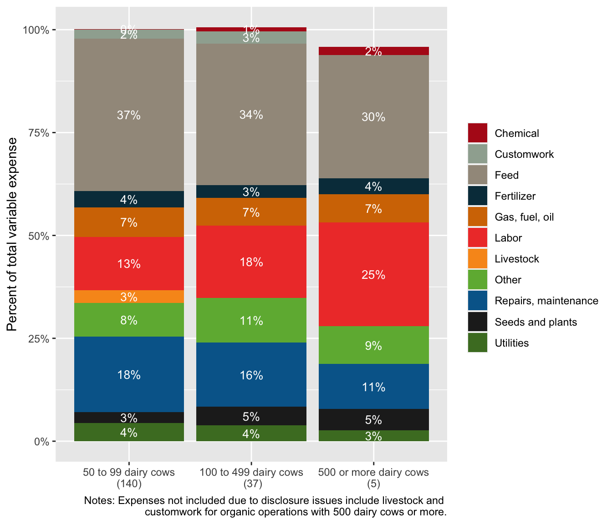

| Variable | 50 to 99 dairy cows (n=140) | 100 to 499 dairy cows (n=37) | 500 or more dairy cows (n=5) |
|---|---|---|---|
| Sales of milk from cows | 309,144 | 937,471 | 4,767,301 |
| Sales of milk from cows as a percent of total sales | 76% | 85% | 82% |
| Number of milk cows kept for production of milk | 66 | 166 | 687 |
| Number of beef cows on an operation | 2.2 | (D) | (D) |
| Total sales | 410,995 | 1,119,417 | 5,637,462 |
| Gross cash farm income | 417,371 | 1,153,918 | 5,729,358 |
| Total government payments | 2,241 | 13,404 | 31,941 |
| Operations that recieve government payments | 54% | 73% | 80% |
| Crop insurance | 10% | 32% | 40% |
| Full owner | 7% | 5% | 0% |
| Part owner | 90% | 89% | 100% |
| Full tenant | 3% | 5% | 0% |
| An operation with a beginning operator | 33% | 51% | 40% |
| An operation with all White only, non-Hispanic operators | 97% | 100% | 100% |
| An operation with a young operator | 31% | 49% | 20% |
| An operation with a senior operator | 11% | 22% | 20% |
| An operation with a producer with military service | 6% | 3% | 0% |
| Note: | |||
| All dollar amounts are inflation adjusted to 2023 dollars |
Beef Focus group - Census of Agriculture data
1 Data description
1.1 Dairy
We use the 2017 restricted access farm-level data from the Census of Agriculture. Data include operations in New York with at least 50 dairy cows.
Dairy operations are defined as operations with milk cows kept for production of milk, include dry milk cows and milk heifers that had calved (k805>0). While some dairy operations in NY are diversified, most only produce milk. We keep all operations in the sample, even if they are diversified.
We present data by three scale categories, based on the USDA ERS Report Consolidation in U.S. Dairy Farming:
- 50-99 dairy cows
- 100 to 499 dairy cows
- 500 or more dairy cows
All data are presented grouped by these three scales and organic/non-organic for operations located in New York. Data include GCFI, total sales, dairy sales, dairy sales as a percent of total sales, and other operation characteristics.
We inflation adjust all variables expressed as dollars in 2023 dollars using the U.S. Bureau of Labor Statistics, CPI Inflation Calculator for January 2017 to January 2023 (1.23).
1.2 Beef
We provide expenses as a cost per head by scale. We use 2017 Census of Agriculture microdata to estimate the average cost of production for livestock operations located in the Northeast (NY, PA, NJ, VT, NH, MA, CT, RI, ME) selling through local food market channels only (including direct-to-consumer and intermediated markets). In the Census of Agriculture, a farm is defined as a place from which $1,000 or more of agricultural products were produced and sold, or normally would have been sold, during the census year. This very liberal definition of a farm captures a wide range of farms, including those that are not aspiring to be commercially viable operations. To capture only commercial operations, we drop all observations with less than $1,000 in sales.
Our sample consists only of non-diversified non-dairy cattle operations (i.e., operations that sell one species and no crops) and selling exclusively through local food market channels (i.e., they do not sell through both local and commodity market channels). Local food market channels include both direct-to-consumer market channels (i.e., farmers market, on-farm stores or farm stands, roadside stands or stores, u-pick, CSA, and online marketplaces) and intermediated market channels (i.e., supermarkets, supercenters, restaurants, caterers, independently owned grocery stores, food cooperatives, K-12 schools, colleges or universities, hospitals, workplace cafeterias, prisons, and food banks). Farms are allowed to grow crops but have zero sales, implying that those costs accrue to feed requirements for the livestock enterprise.
To capture cost of production differences across scale, we separate our sample, based on the number of head sold in a year, into small operations (<25th quantile), mid-size operations (25th to 75th quantile) and large operations (76th to 95th quantile). We drop observations above the 95th percentile as outliers. We also drop operations selling zero cattle weighing 500 pounds or more. As we are not interested in very small operations, we also drop small scale operations with <2 head.
Scale: Cattle sold or moved from this operation in 2017, including calves weighing 500 pounds or more, local only
- Mid-scale (25th to 75th quantile): 2 to 8 head
- Large scale (76th to 95th quantile): 9 to 30 head
We attempted to export additional data on cattle operations in New York with further disaggregation among different operation types (e.g., cow-calf, feedlot, stocker/backgrounder), market channels (including nonlocal), and organic. Due to small sample sizes, the data were not approved for the public.
2 Dairy average producer summary statistics
Compute summary statistics to show the “average producer”. Data is presented for all operations, operations with organic sales, and operations with no organic sales both by scale and all operations together.
2.1 Summary statistics - New York Organic Dairy Operations
2.2 Summary statistics - New York non-Organic dairy operations
| Variable | 50 to 99 dairy cows (n=1,155) | 100 to 499 dairy cows (n=694) | 500 or more dairy cows (n=278) |
|---|---|---|---|
| Sales of milk from cows | 271,493 | 966,533 | 6,515,023 |
| Sales of milk from cows as a percent of total sales | 79% | 81% | 87% |
| Number of milk cows kept for production of milk | 66 | 200 | 1,248 |
| Number of beef cows on an operation | 2.2 | 3.3 | 4.3 |
| Total sales | 359,067 | 1,205,568 | 7,523,318 |
| Gross cash farm income | 370,316 | 1,244,810 | 7,676,532 |
| Total government payments | 2,786 | 10,000 | 37,026 |
| Operations that recieve government payments | 52% | 80% | 87% |
| Crop insurance | 11% | 35% | 62% |
| Full owner | 26% | 11% | 6% |
| Part owner | 69% | 86% | 91% |
| Full tenant | 4% | 2% | 3% |
| An operation with a beginning operator | 27% | 20% | 30% |
| An operation with all White only, non-Hispanic operators | 99% | 99% | 99% |
| An operation with a young operator | 26% | 23% | 24% |
| An operation with a senior operator | 27% | 37% | 44% |
| An operation with a producer with military service | 7% | 8% | 5% |
| Note: | |||
| All dollar amounts are inflation adjusted to 2023 dollars |
2.3 Percent of New York Dairy Operations by Scale (dairy cows)

3 Dairy variable expenses
3.1 Variable expenses - New York Organic Dairy Operations
| Variable | 50 to 99 dairy cows (n=140) | 100 to 499 dairy cows (n=37) | 500 or more dairy cows (n=5) |
|---|---|---|---|
| Livestock | 8,909 | (D) | (D) |
| (5,716) | (790) | (0) | |
| Chemical | (D) | 5,886 | 47,347 |
| (394) | (2,272) | (9,936) | |
| Customwork | 3,872 | (D) | (D) |
| (673) | (7,921) | (107,112) | |
| Feed | 76,526 | 215,003 | 1,162,636 |
| (7,677) | (33,757) | (401,082) | |
| Fertilizer | 7,376 | 14,862 | 109,340 |
| (1,073) | (3,267) | (37,978) | |
| Gas, fuel, oil | 12,368 | 36,307 | 201,802 |
| (956) | (4,464) | (34,176) | |
| Labor | 30,904 | 145,182 | 933,271 |
| (5,949) | (39,234) | (209,367) | |
| Repairs, maintenance | 36,075 | 96,149 | 371,826 |
| (3,351) | (17,688) | (52,228) | |
| Other | 14,072 | 74,107 | 324,251 |
| (1,889) | (20,316) | (129,507) | |
| Seeds and plants | 5,554 | 25,871 | 157,027 |
| (984) | (4,942) | (18,106) | |
| Utilities | 7,364 | 20,749 | 81,568 |
| (523) | (3,383) | (12,345) | |
| Total variable expense | 203,052 | 654,772 | 3,562,043 |
| (19,244) | (108,108) | (537,902) | |
| Note: | |||
| All dollar amounts are inflation adjusted to 2023 dollars |
3.2 Variable expenses - New York Non-Organic Dairy Operations
| Variable | 50 to 99 dairy cows (n=140) | 100 to 499 dairy cows (n=37) | 500 or more dairy cows (n=5) |
|---|---|---|---|
| Livestock | 3,300 | 10,097 | 39,269 |
| (432) | (1,401) | (6,252) | |
| Chemical | 3,173 | 14,471 | 90,297 |
| (237) | (1,108) | (8,461) | |
| Customwork | 6,470 | 27,506 | 152,234 |
| (462) | (1,918) | (12,861) | |
| Feed | 68,470 | 267,578 | 1,788,705 |
| (1,716) | (9,869) | (82,477) | |
| Fertilizer | 11,572 | 37,811 | 174,233 |
| (996) | (2,028) | (11,394) | |
| Gas, fuel, oil | 13,098 | 46,742 | 232,956 |
| (615) | (2,552) | (14,684) | |
| Labor | 16,138 | 108,745 | 952,959 |
| (1,271) | (4,972) | (55,640) | |
| Repairs, maintenance | 26,559 | 84,799 | 507,667 |
| (901) | (3,215) | (31,378) | |
| Other | 15,129 | 65,104 | 526,699 |
| (936) | (4,311) | (49,906) | |
| Seeds and plants | 9,511 | 34,210 | 174,386 |
| (589) | (1,448) | (13,110) | |
| Utilities | 8,856 | 22,353 | 114,787 |
| (279) | (868) | (6,167) | |
| Total variable expense | 179,216 | 705,454 | 4,666,754 |
| (4,120) | (21,334) | (208,412) | |
| Note: | |||
| All dollar amounts are inflation adjusted to 2023 dollars |
3.3 Average Variable Expenses for New York Organic Dairy Producers as a Percent of Total Variable Expense

3.4 Average Variable Expenses for New York Non-Organic Dairy Producers as a Percent of Total Variable Expense

4 Beef variable expenses
4.1 Variable expenses - Local Beef Operations in the Northest
| Variable | 2 to 8 head sold (n=264) | 9 to 30 head sold (n=80) |
|---|---|---|
| Livestock | 460 | 292 |
| 154 | 74 | |
| Livestock | (61) | (58) |
| 998 | 622 | |
| Feed | 700 | 410 |
| (84) | (78) | |
| Fertilizer, seeds, plants | 210 | 77 |
| 0 | 2.4 | |
| Fertilizer, seeds, plants | (37) | (18) |
| 296 | 175 | |
| Gas, fuel, oil | 169 | 111 |
| (35) | (31) | |
| Interest | 343 | 107 |
| 0 | 0 | |
| Interest | (112) | (35) |
| 429 | 313 | |
| Labor | 0 | 0 |
| (199) | (112) | |
| Lease | 1,760 | 370 |
| 1,230 | 288 | |
| Lease | (176) | (37) |
| 649 | 361 | |
| Repairs, maintenance | 231 | 300 |
| (136) | (41) | |
| Other | 367 | 236 |
| 146 | 143 | |
| Other | (62) | (45) |
| 151 | 41 | |
| Rent | 0 | 0 |
| (128) | (17) | |
| Utilities | 229 | 97 |
| 82 | 74 | |
| Utilities | (39) | (14) |
| 5,892 | 2,692 | |
| Total expense per head | 4,846 | 2,434 |
| (503) | (220) | |
| Total expense | 18,258 | 39,468 |
| 14,268 | 32,871 | |
| Total expense | (1,360) | (4,066) |
4.2 Average Expenses Per Head for Local Beef Producers in the Northeast

4.3 Average Expenses per head for Local Beef Producers in the Northeast as a Percent of Total Expense per head

5 Dairy profitability
We present data on return on assets, net farm income, and operating profit margin.
Return on assets (ROA) = (gross cash farm income - total expenditures + interest expense)/total assets
Operating profit margin (OPM) = (gross cash farm income - total expenditures + interest expense)/gross cash farm income
Net farm income (NFI) = gross cash farm income - total expenditures
Gross cash farm income = total sales + contract income + government payments + income from ag related sources - landlord’s share of total sales
Total assets = all land and buildings owned + all land and buildings leased from others + current value of machinery and equipment - land and buildings leased to others
Total expenditures = sum of contractor total production expense + operator and landlord total production expenses
5.1 Profitability - New York Organic Dairy Operations
| Variable | 50 to 99 dairy cows (140) | 100 to 499 dairy cows (37) | 500 or more dairy cows (5) |
|---|---|---|---|
| Return on assets | 14% | 14% | 13% |
| Operating profit margin | 43% | 39% | 30% |
| Net farm income (GCFI minus total expenses) | 169,492 | 376,320 | 1,386,792 |
5.2 Profitability - New York Non-Organic Dairy Operations
| Variable | 50 to 99 dairy cows (1,155) | 100 to 499 dairy cows (694) | 500 or more dairy cows (278) |
|---|---|---|---|
| Return on assets | 15% | 19% | 30% |
| Operating profit margin | 41% | 36% | 32% |
| Net farm income (GCFI minus total expenses) | 151,897 | 416,250 | 2,219,641 |